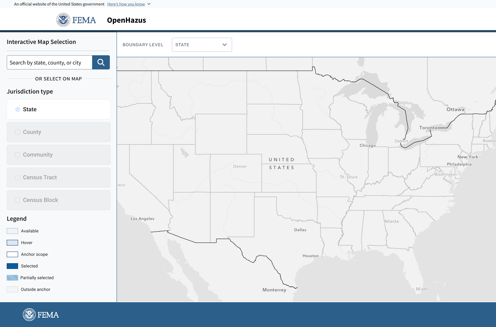
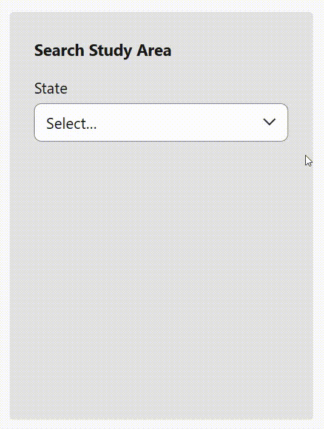
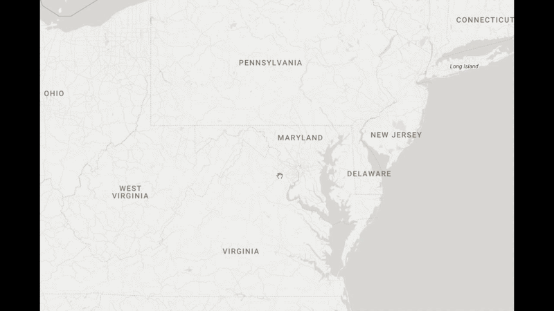
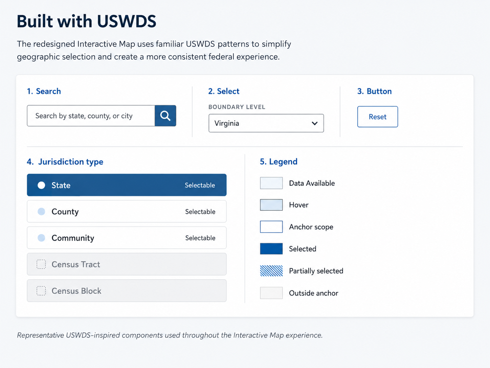
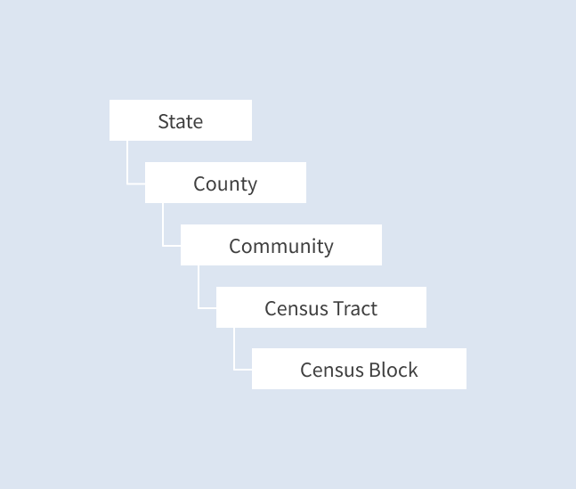
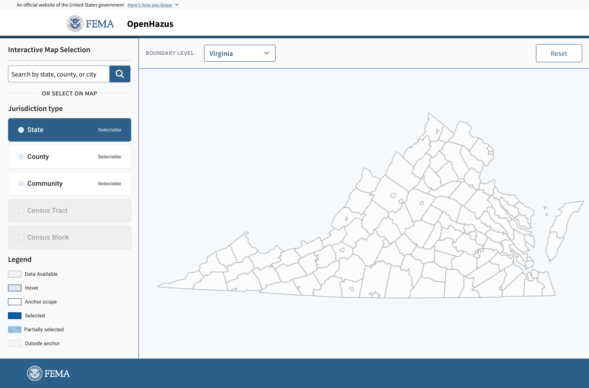
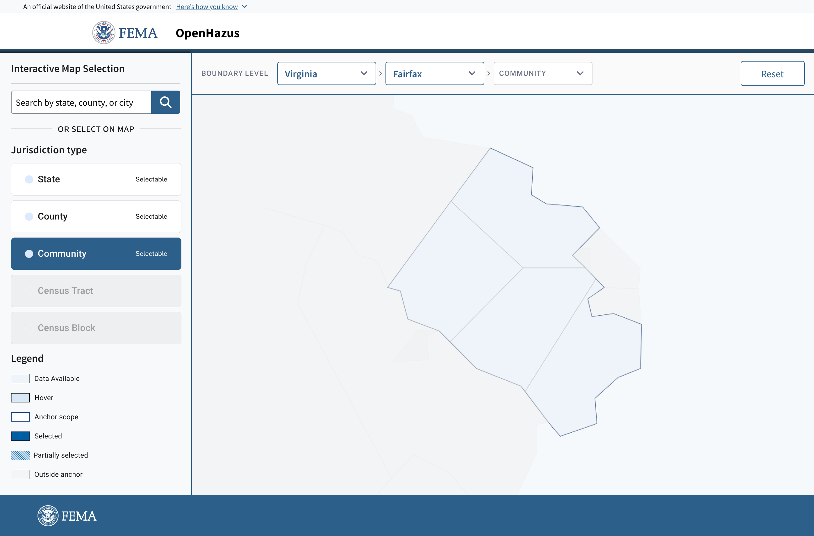
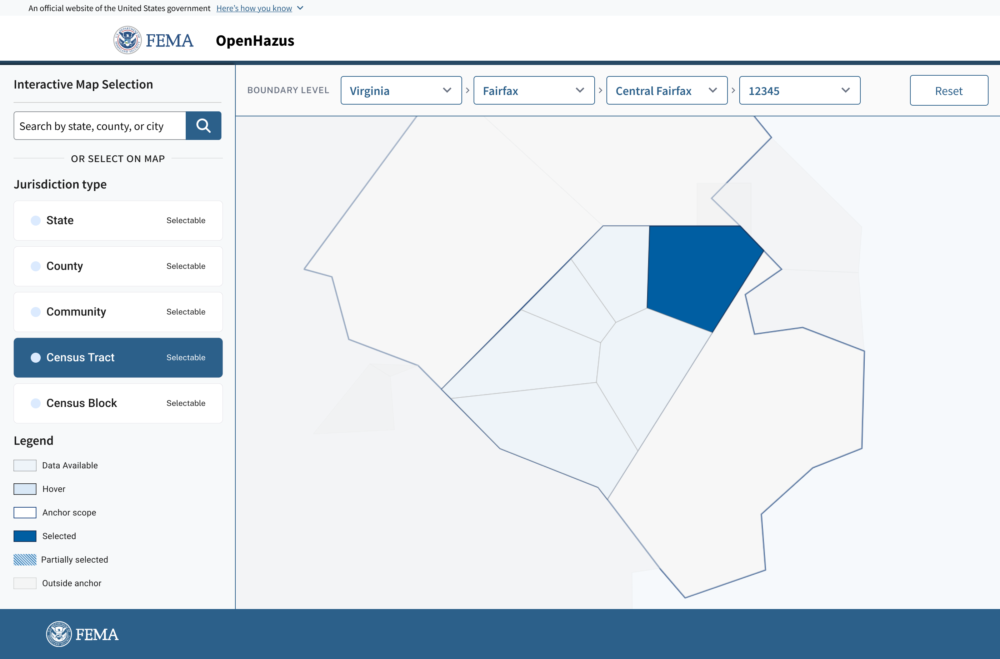

Opening Page
The analyst lands on the full U.S. map with two ways to begin: selecting a state directly from the map or searching by state, county, community, or city.
Redesigning the geography selection step of a hazard analysis workflow, making geospatial boundary selection accessible to analysts across all technical backgrounds.
The project ended due to federal budget cuts before the work was finished. The final section covers the location selection model I continued developing afterward.

The Interactive Map is the first step in the workflow for generating the risk analysis report. Analysts use it to select the geographic boundary for their analysis, which defines which area will be included in the report. However, this selection process can be complex and not clearly explained.
I redesigned the interactive map experience to make geographic selection clearer and easier to confirm before users move forward with report generation.
The existing platform was built on an ArcGIS-based application. While the platform offered a wide range of advanced mapping tools, not every user needed that level of complexity to define a geographic boundary. This created a steep learning curve for users who were unfamiliar with GIS tools.

Screenshot of current Hazus platform. ESRI ArcGIS
Quickly select a study area without having to learn all of ArcGIS's tools and features.
Clearly understand what is selected on the map at every point in the workflow.
Select and confirm the correct geographic area for analysis, then move on to the next step with confidence.
Just because a map is complex doesn’t mean it requires a complex workflow. Since users are already looking at maps packed with data, the redesigned workflow needed to reduce cognitive load by helping users focus on only one task at a time.
Maintain map context — Allow users to make location decisions while keeping the selected geography visible and understandable.
Increase selection confidence — Make it clear what is selected, what is active, and whether the user is ready to move forward.
Simplify the path to selection — Reduce unnecessary hierarchy and support both guided exploration and direct search.
To simplify the selection process, I explored multiple interaction models to understand how users could find and select jurisdictions while maintaining the map as the central element of the workflow.

A structured sidebar flow using dropdowns, starting at State and arriving at Census Block.
A side panel showing the active jurisdiction and its relationship to the parent level was a idea worth keeping.

Zoom in & zoom out felt familiar from most online maps like google map, but it gave users too little control over confirming a jurisdiction.
Zoom alone was not enough for these use cases. Users still needed a clear selection model, visible states, and a confirmation step.
A search approach for users who already knew the area they needed, removing the need to click through every map layer.
Search carried into the final design as a map-integrated search bar.
Each concept had something worth carrying forward. The final design incorporates all three of these elements while addressing the visual feedback issues that none of them had fully resolved.
I redesigned the map from a complex GIS interface into a focused, step-by-step workflow for defining an analysis area.

Redesigned the interface using USWDS patterns to create a more consistent and accessible experience across different levels of GIS expertise.

Introduced a progressive hierarchy from State → County → Community → Census Tract / Block, helping users narrow their analysis area before loading more detailed geographic data
The redesigned Interactive Map keeps the geography selection process on the map. Analysts can search for a location, select a state, switch between boundary types, and confirm their selection without leaving the map workflow.
The analyst lands on the full U.S. map with two ways to begin: selecting a state directly from the map or searching by state, county, community, or city.

After selecting a state, the analyst can choose the boundary type they need: County, Community, Census Tract, or Census Block. The map updates to match the selected boundary type instead of forcing users through a fixed sequence.

With Virginia selected, choosing County redraws the map to show county boundaries within the state. Users can switch to another boundary type without restarting the flow.

Selecting a county highlights the active jurisdiction while dimming surrounding areas. A selection card appears next to the chosen area, showing location details and a clear option to add it to the study area.
One thing I learned from this project is that having complex and extra controls doesn’t always guarantee a better user experience. A better experience happens when things are simple and give users just enough tools to get their job done with confidence.